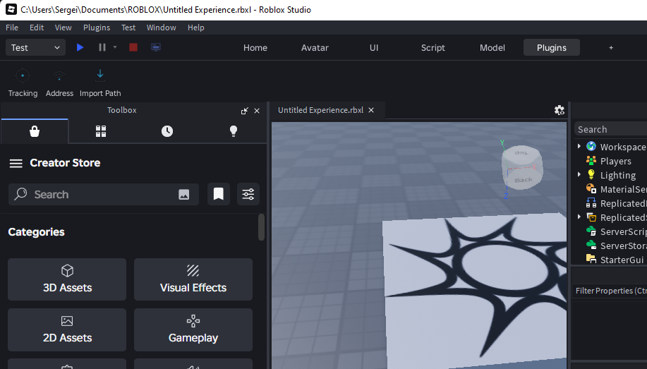
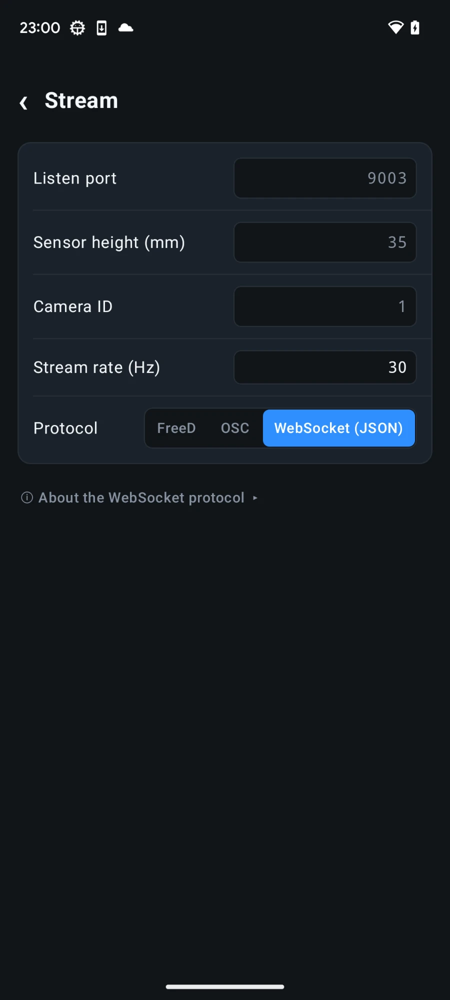
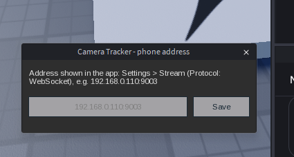
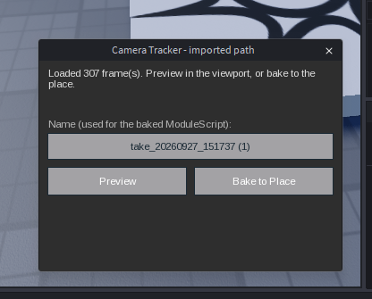

Choose a workflow
Live tracking drives the Studio edit viewport or local player camera in Play. The phone hosts the WebSocket server; the Studio plugin connects to it. Live tracking is Studio-only.
Camera Paths stores imported takes in the place and connects them to game events with named cues. Saved playback is designed to run without the phone or Studio plugin.
Roblox Json export requires Pro. Lite live pose sessions last up to five minutes at up to 30 Hz; Pro supports up to 60 Hz. Local phone recording is independent of the pose-stream session limit.
Install the Studio plugin
The Camera Tracker plugin is currently supplied as CameraWebSocketPlugin.lua; there is no public plugin listing linked from this guide. Contact Tech Story to request the beta plugin file.
- On Windows, place
CameraWebSocketPlugin.luain%LOCALAPPDATA%\Roblox\Plugins. - Restart Roblox Studio and open your place. Find Camera Tracker under the Plugins tab, with Tracking, Markers, Marker List, Address, and Camera Paths.
Install the file as a Studio plugin, not a Script or LocalScript in the game. Update the phone and plugin together, even when no Ref marker is selected.

Set up the phone
In Camera Motion Studio's setup wizard, choose Roblox Studio. It selects WebSocket (JSON) and offers the OBS and NDI return-viewfinder modes. You can also choose the protocol manually under Settings > Stream.
- Set Protocol to WebSocket (JSON) and keep the Default axis mapping.
- Start streaming. The Stream page shows the phone's address, normally
ws://<phone-ip>:9003. - Keep the phone and Studio computer on the same Wi-Fi or local network. The phone is the server; Studio is the client.

Track in Studio
- Choose Plugins > Camera Tracker > Address and enter the address shown by the phone. The plugin remembers it.
- Switch Tracking on. It starts off each time Studio opens, and reconnects if the phone stops and restarts streaming.
- Move the phone to frame the shot. Press Zero in the app to re-home its tracking origin.
- When testing in Play, use F8 to toggle tracking: Studio hides plugin toolbars while the game is running.
In Play, the tracker's origin is anchored to the local character's HumanoidRootPart, so the live camera starts relative to the character instead of jumping to the world's origin. When tracking stops, the plugin restores the prior camera mode, field of view, and depth-of-field state.

Frame and focus
The app calculates Roblox-ready position, rotation, and metres-to-studs mapping before sending each frame. Its Space scale control changes how far the virtual camera travels for a physical move; 1 is life size.
Calibrate zoom in the app to send vertical field of view. The calculation uses the phone's Sensor height (mm) setting. Calibrate focus and iris together to drive a Roblox DepthOfFieldEffect; this is a visual approximation, not a physically exact lens model.
Bring scene markers to the phone
The plugin can send tagged parts, models, attachments, and bones to the phone's read-only Live scene. The operator can aim at a marker or hold focus on it. In Play, the local character can be represented by a body capsule and head sphere.
- On the phone, enable Settings > Stream > Scene link > Accept a marker link.
- In Studio, open Marker List, select scene items, and choose Add selected. Set shape, colour, and aim point as needed.
- Switch Markers on and tap Allow on the phone. In Play, F7 toggles marker sending.
Check placement before relying on it for a shot. Marker animation and role changes are not recorded with the camera take.
Follow a reference marker
In Marker List, the Role button cycles through Focus, Aim, Ref and their combinations. Each role belongs to one marker. Send roles to phone reapplies Studio choices; Mirror the phone's roles controls whether returned assignments are written to edit-mode attributes.
For supported local reconstruction use a Point marker or a Base anchor, give it Ref, and choose workspace TrackerRefFollow as Position or Heading. In Play configure the client instances; automatic role mirroring writes edit-mode instances. The plugin composes local camera motion with the current exported scene anchor. Hold, replay, stale links and unsupported operations can use world fallback.
Focus, Aim and Ref can share one marker. Local travel carries Space scale while the reference stays life size; exported takes bake world camera motion, without the reference metadata or animated marker scene. Changing the reference can shift the camera position.
Import a take into Camera Paths
- Record a move on the phone. From the take menu choose Export Roblox Json (Pro), then transfer the JSON file to the Studio computer. For takes with operated rig/look-at motion, use the available As streamed export options.
- Stop Play. Open Plugins > Camera Tracker > Camera Paths and choose Import JSON…. Allow Script Injection when Studio asks; the plugin creates saved data and the shared player.
- Select the imported recording and use Preview / Stop, scrub, or Seek seconds to inspect it. Rename changes the label; Replace JSON keeps the path ID and cue assignments.
- Save the place. Importing a recording does not enable auto-play.
Turn live Tracking off for cutscene tests. Starting preview hands camera ownership to preview; closing the window stops it and restores the edit camera. Unrelated camera scripts can still compete for control.
Save a game cue
- Select a path and enter a unique Cue key, such as
intro_shot. - Choose World for recorded coordinates, Character for the player root position (translation only), or Object for a selected part/model transform. The origin is captured once at playback start; it does not keep following a moving object.
- Set Use DOF, Start / End seconds, Can skip, and When busy (Reject or Replace). Use Start = current, End = current, or Full range to define a non-destructive playback range.
- Click Save / assign cue and save the place. Preview uses the displayed settings even before they are saved, so save before testing game playback.
For spawn playback, explicitly assign Set / clear startup and turn Auto-play ON. Leave auto-play OFF for game-event cues. For Character preview, select a scene part/model as a stand-in origin.
Use DOF controls recorded blur, not unrelated Lighting effects. Start/End limits playback without deleting frames.
Connect a cue to a game event
The Camera Paths Client example and Server example buttons provide code to copy into your game. A LocalScript can request a saved cue like this:
local Playback = require(game:GetService("ReplicatedStorage").CameraTracker.Playback)
local request = Playback.PlayCue("intro_shot")
local result = request:Await()A server Script uses Playback.RequestCue(player, "intro_shot"). Requests report completion, skipping, cancellation, rejection or failure; use those results to continue presentation. The game still owns movement/input locks, trigger debouncing, objectives and rewards. Client completion is not server proof for a reward.
Test completion and camera restoration with live Tracking off. Requests to multiple players are independent, not frame-synchronised. Published-place and multi-client validation are still required before release.
Shared playback and older imports
Current imports share ReplicatedStorage.CameraTracker and one CameraTrackerPlayer LocalScript. Paths, named cues and the shared runtime are saved in the place; there is no separate full player script per recording.
Older imports under ReplicatedStorage.CameraTrackerPaths use Convert selected legacy path…. Original recordings are retained. Review old/custom player scripts before testing; conversion only disables a recognised, unmodified generated player. Save the place after conversion.

See the Studio shot on the phone
For a return viewfinder, capture the Roblox Studio window in OBS and send it to the phone over WHIP or NDI. This video route is separate from the WebSocket camera tracking connection.
Connection checks
- Connection retries: confirm the phone stream is running, WebSocket (JSON) is selected, the stored IP and port match, and both devices are on the same network.
- No toolbar during Play: use F8 for tracking and F7 for markers.
- FOV does not change: calibrate zoom. No depth of field: calibrate both focus and iris.
- Camera seems held by another script: remove older camera-control scripts from previous HTTP setups. The plugin warns when it detects a competing camera script.
- Import unavailable: stop Play and allow the plugin's Script Injection permission. Cue edits not retained: click Save / assign cue and save the place.
Too many WebStreamClients: let the plugin retry; restart Studio if stale clients persist.